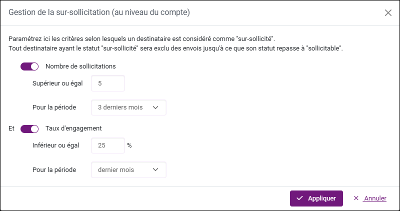

Gérer la sur-sollicitation des destinataires
La sur-sollicitation se réfère à l'excès de messages envoyés à un même destinataire sur une période de temps limitée, ce qui peut entraîner une fatigue du destinataire, une diminution de l'engagement, et une augmentation des désabonnements ou des signalements comme spam. Une gestion efficace de la sur-sollicitation implique de contrôler la fréquence des envois pour maintenir un équilibre entre la communication avec le destinataire et le respect de son seuil de tolérance.
Pour paramétrer la gestion de la sur-sollicitation :
-
Rendez-vous dans Compte et suivi depuis votre compte.
-
Ouvrez l'onglet Liste globale des destinataires dans le menu latéral à gauche.
Vous retrouverez dans la Liste globale des destinataires tous les destinataires importés dans les campagnes Email/SMS de votre compte (toutes enquêtes confondues). Pour chaque destinataire, le nombre de sollicitations indique le total des invitations et des relances envoyées à ce destinataire.
-
Cliquez sur Gestion de la sur-sollicitation.
L'assistant de gestion de la sur-sollicitation apparaît. En activant les switch buttons, vous pouvez définir les critères déterminant la sur-sollicitation de vos destinataires en fonction du :
-
Nombre de sollicitations.
-
Taux d'engagement.
Le taux d'engagement est calculé en fonction du nombre de réponses reçues par rapport au nombre de sollicitations envoyées.
EXEMPLE : Nous souhaitons éviter que les destinataires ayant été sollicités 5 fois ou plus sur les 3 derniers mois et ayant un taux d'engagement de 25% ou moins sur le dernier mois soient contactés.

-
-
Cliquez sur Appliquer pour confirmer.

Les statuts des destinataires dans la liste se mettent à jour : Sur-sollicités ou Disponibles.
REMARQUE : Vous pouvez Exporter la liste globale de vos destinataires au format Excel si elle est trop longue pour être consultée facilement à l'écran par exemple.
REMARQUE : Après avoir activé la gestion de la sur-sollicitation au niveau du compte, elle sera activée par défaut sur toutes les campagnes de diffusion créées ultérieurement ; vous aurez la possibilité de désactiver la prise en compte de la sur-sollicitation directement pendant la création d'un nouveau canal.
Si vous avez paramétré la gestion de la sur-sollicitation sur un canal (activée ou désactivée), le paramétrage au niveau du canal sera conservé si vous désactivez puis réactivez la gestion de la sur-sollicitation au niveau du compte.
ATTENTION : Si vous supprimez un destinataire d'un canal, toutes les sollicitations associées à ce canal seront également retirées de la liste globale des destinataires.
Désactiver la sur-sollicitation sur un canal Email/SMS
Pour ne plus prendre en compte les critères de sur-sollicitation définis au niveau du compte sur un canal Email/SMS :
-
Dans la partie Diffusion, sélectionnez le canal concerné.
-
Cliquez sur Paramètres.
-
Cliquez sur le switch button pour désactiver la sur-sollicitation sur ce canal.

REMARQUE : Quand la sur-sollicitation est activée sur un canal, le bandeau de statistiques d'envoi présent dans les onglets Destinataires et Gérer mes envois prend en compte les destinataires sur-sollicités.
ATTENTION : À ne pas confondre avec la sur-sollicitation sur les relances automatisées, la gestion de la sur-sollicitation sur un canal Email/SMS aura un effet sur tous les envois (invitations et relances) effectués sur ce canal.